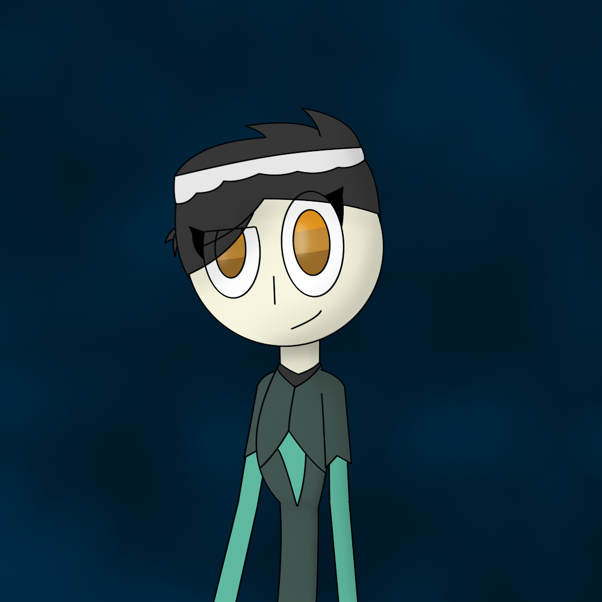
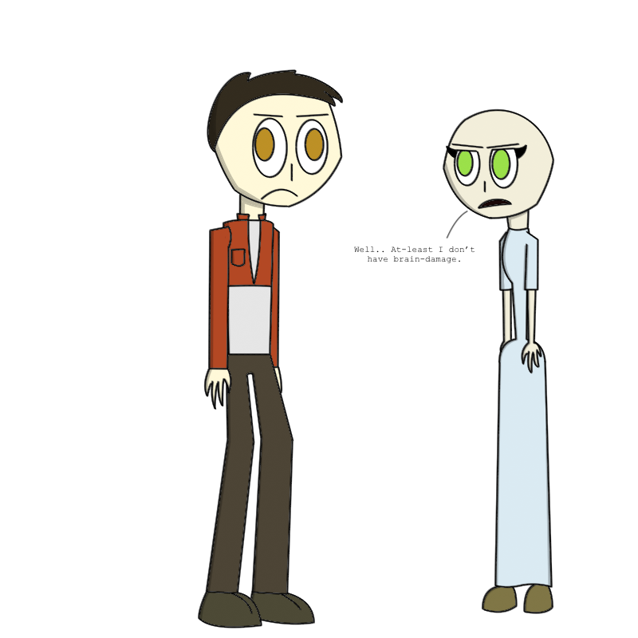

The art-style I use is simple and quite easy to learn. If you want to see better then this place isn't for you. The images are free to download but if you're gonna use them for reviews or other purposes then give credit. Stealing and/or recolor my work will only get you into trouble.
Neseria. An old friend's oc.
{kind=link}
 Just an image of my old oc Harry giving Her from imscared a gift. Some sort of old shipping image really.
Just an image of my old oc Harry giving Her from imscared a gift. Some sort of old shipping image really. A large Meerjel space cruiser thing with the old main characters.
A large Meerjel space cruiser thing with the old main characters. Old version of a tribute picture.
Old version of a tribute picture. I would want to draw Crikaty again sometime.
I would want to draw Crikaty again sometime. The old school, human boys!
The old school, human boys! Possibly my first ever Marathon pic!
Possibly my first ever Marathon pic! Lay low Crikaty. You're a cricket.
Lay low Crikaty. You're a cricket.The first time I've drawn heads differently.
{kind=link}
 This is Gina. Some sort of monster psychopath character from a Postal influenced game I wanted to make. Anyway.
This is Gina. Some sort of monster psychopath character from a Postal influenced game I wanted to make. Anyway. I wish I didn't fail at making this game. It's just I don't like drawing environments.
I wish I didn't fail at making this game. It's just I don't like drawing environments. Something from an old story plan. Mostly forgotten.
Something from an old story plan. Mostly forgotten. His daughter is happy for him!
His daughter is happy for him! This was an attempt at drawing in someone else's artstyle. The style's original owner I forgot.
This was an attempt at drawing in someone else's artstyle. The style's original owner I forgot. Cookie!
Cookie! Glowing stuff.
Glowing stuff. A mainteinance synth lady.
A mainteinance synth lady. Great times when Nadja was here!
Great times when Nadja was here! Nadja just appeared in my 3DS without warning. Just kidding I've put her there.
Nadja just appeared in my 3DS without warning. Just kidding I've put her there. I should probably remove this one...
I should probably remove this one... Slendytubbies! Was awhile ago since I've drawn this one. Completelly forgot about it.
Slendytubbies! Was awhile ago since I've drawn this one. Completelly forgot about it. Jeeme! Take a guess where she is. It's Bungie related.
Jeeme! Take a guess where she is. It's Bungie related. The old version of the Flowas for an old game I wanted to make. Didn't go well.
The old version of the Flowas for an old game I wanted to make. Didn't go well. Based of a game for the Atmos Engine.
Based of a game for the Atmos Engine.Page 2
Page 3
Page 4
Go back to start